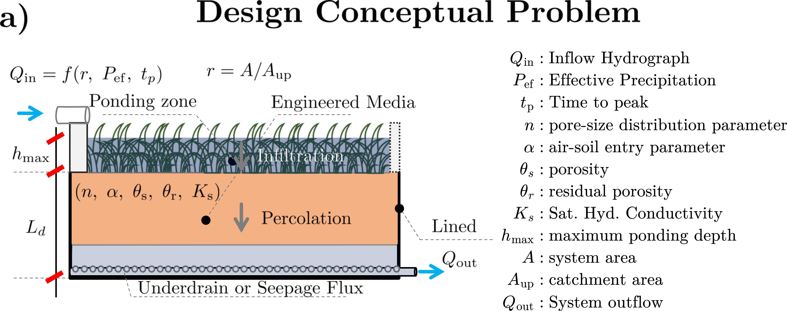

DRAIN-LID Design Performance Explorer
This interactive platform maps hydrologic performance and lifecycle cost tradeoffs in infiltration-based low impact development systems. Users can explore how soil type, effective precipitation, area ratio, media depth, and inflow timing shape peak-flow attenuation, detention behavior, ponding response, and cost efficiency across the DRAIN-LID simulation database.
Project overview

What this page shows
Each point in the 3D plots corresponds to one numerical realization from the DRAIN-LID database. The axes represent area ratio, LID media depth, and inflow time to peak.
How to use it
First select a soil type and effective precipitation depth. Then adjust the hydrologic and cost filters. Click any 3D point to display the corresponding inflow and outflow hydrographs.
What can be evaluated
The explorer supports screening based on peak-flow reduction, detention time, time-to-peak delay, maximum ponding depth, and net present value per unit contributing area.
Design and cost filters
How the model works
The DRAIN-LID Designer toolbox is built on a physics-based numerical framework that represents vertical water movement through engineered bioretention media, the inflow hydrograph from the contributing catchment, and the lifecycle costs of alternative designs. This interface allows users to interpret the resulting database through hydrologically meaningful metrics and cost-performance tradeoffs.
Richards-based vertical flow model
Vertical flow through the media is represented using the one-dimensional mixed-form Richards equation with pressure head \(h(z,t)\) as the primary state variable:
Here \(z\) is depth, \(\theta(h)\) is volumetric water content, \(K(h)\) is hydraulic conductivity, \(S_s\) is specific storage, and \(S(z,t)\) represents sources and sinks linked to drainage and exchange processes. Soil hydraulic behavior is represented through van Genuchten–Mualem constitutive relationships.
The model is solved with an implicit finite-volume formulation and adaptive Newton–Raphson iteration, so each point in the database corresponds to a full Richards-equation simulation.
Design hydrograph and catchment inputs
Inflow to the LID cell is represented through a synthetic design hydrograph driven by:
- effective rainfall depth \(P_{\mathrm{eff}}\),
- upstream contributing area \(A_{\mathrm{up}}\), and
- hydrograph time to peak \(t_{\mathrm{p}}\).
A Nash-type formulation is used for the inflow hydrograph:
For each combination of \((P_{\mathrm{eff}}, A_{\mathrm{up}}, t_{\mathrm{p}})\), area ratio \(r = A/A_{\mathrm{up}}\), media depth \(L_d\), and soil type, the model routes the hydrograph through the bioretention profile.
Hydrologic performance metrics
Peak flow reduction
Time-to-peak delay
Detention time
These metrics allow users to screen feasible solutions and compare designs without rerunning the numerical model.
Lifecycle cost model
Construction and maintenance are represented using a simple but interpretable lifecycle cost framework.
Construction cost
Annual O&M cost
Present-value factor
Net present value
Modeling assumptions
- Initial conditions correspond to an unsaturated hydrostatic profile.
- The system is modeled as laterally lined.
- The underdrain behaves as a free-drain boundary.
- The vertical profile is discretized with nonuniform finite-volume nodes.
- Hydraulic properties are homogeneous within each simulation.
- Evapotranspiration is neglected over event-scale simulations.
- Flow is treated as one-dimensional in the vertical direction.
References
Gomes Jr, M.N., Brasil, J.A.T., Johnson, D., Papagiannakis, A.T. and Giacomoni, M.H., 2025. A coupled Darcy-Richards framework for hydrological modeling of permeable pavements, green roofs, and bioretention systems. Environmental Modelling & Software, p.106766.
Gomes Jr., M.N. LID-Design Atlas (LIDA): Mapping Hydrologic Performance and Cost Tradeoffs in Infiltration-Based LID Design, Journal of Hydrologic Engineering (under review).
About this explorer. This interactive tool was developed by Marcus N. Gomes Jr., PhD, to visualize the design space of infiltration-based low impact development systems simulated with the DRAIN-LID model. Each point represents a numerical realization of a mixed-form Richards equation coupled to a structural drainage representation under a specified inflow hydrograph and media configuration.